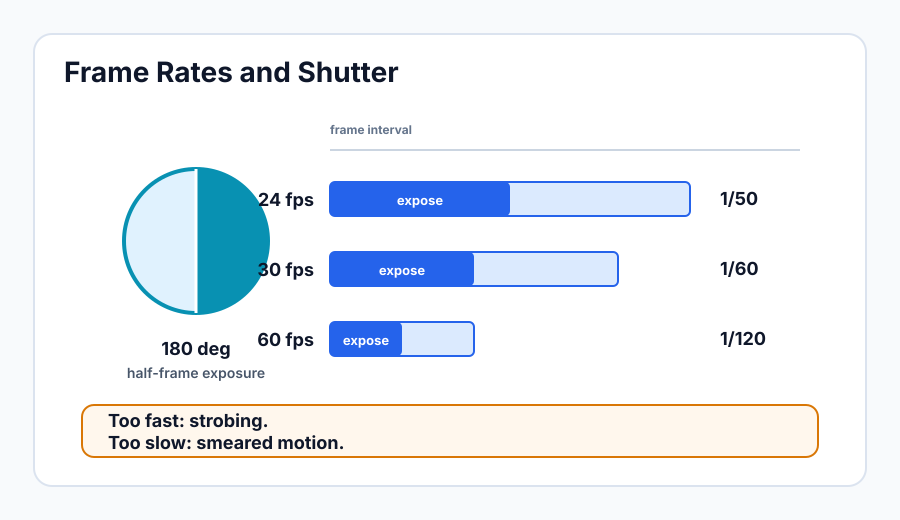

Frame Rates and Shutter
Learning Objectives
- Identify common video frame rates and understand when each is used.
- Explain the 180-degree shutter rule and apply it to any frame rate.
- Describe what happens visually when the shutter rule is violated.
- Understand how to shoot slow motion by selecting a higher frame rate.
- Know the practical difference between 24fps and 30fps for institutional video.
What Frame Rate Really Means
Video is a rapid sequence of still images — frames — displayed fast enough that the human eye perceives smooth motion. The frame rate tells you how many of those images are captured (and displayed) every second. Higher frame rates capture more images per second, which means motion is smoother and more detailed. Lower frame rates capture fewer images per second, and the motion takes on a particular quality that audiences associate with cinema and high-budget production.
Choosing a frame rate is not just a technical decision — it is an aesthetic one with real consequences for how the finished piece feels. Understanding the options is the first step to choosing intentionally rather than by accident.
Common Video Frame Rates
| Frame Rate | Common Use | Notes |
|---|---|---|
| 23.976 fps | Cinema-style delivery, streaming | The "24fps" of digital video — slightly slower than true 24 for legacy sync reasons |
| 24 fps | True cinematic frame rate | Used in film acquisition; technically distinct from 23.976 |
| 29.97 fps | Broadcast TV (NTSC countries) | The standard for North American television delivery |
| 30 fps | Web video, corporate production | Slightly smoother than 24; common for interviews and events |
| 59.94 fps | Slow motion for 29.97 timelines | Plays back at half speed in a 29.97 timeline |
| 60 fps | Slow motion, sports, gaming | Plays back at half speed in a 30fps timeline |
24fps: The Cinematic Standard
Twenty-four frames per second (technically 23.976fps in digital video) is the frame rate most people instinctively associate with "film" or "cinematic" quality. It produces a characteristic motion cadence — a slight blur on fast movement — that viewers have been conditioned over a century of cinema to read as high-production-value content. For documentary, narrative, and most institutional video intended to feel polished, 24fps is the default choice.
30fps: Smoother and Safer
Thirty frames per second produces noticeably smoother motion than 24fps. It is common for broadcast news, corporate interviews, and web video where "cinematic" is less important than clarity and ease of production. Some operators prefer 30fps because it gives slightly more margin when shooting moving subjects — the extra frames mean less motion blur per frame, which can make focus errors slightly less obvious. For institutional use cases like training videos, conference recordings, or web content, 30fps is a perfectly appropriate and common choice.
60fps: For Slow Motion
Sixty frames per second captures so many images per second that when you play the footage back at 24 or 30fps, the motion appears slowed down. A 60fps clip played back in a 24fps timeline runs at 40% of real speed — a dramatic slow-motion effect without any software interpolation. This is useful for capturing detail in fast-moving subjects: a speaker's expressions, hands gesturing, action sequences, or product demonstrations. Shoot at 60fps whenever you think you might want slow-motion options in the edit.
When you shoot at 60fps for slow motion, you are typically not recording audio you intend to use — the pitch and timing of audio will be wrong when played back at reduced speed. Plan to cover slow-motion clips with music or narration in the edit.
The 180-Degree Shutter Rule
In the days of film cameras, the shutter was a rotating disc with a half-circle cutout — 180 degrees of the rotation exposed the film, 180 degrees blocked it while the film advanced to the next frame. This mechanical reality created the motion blur that audiences saw in every film ever made, and it became the visual standard for what "natural" motion looks like on screen.
Digital cameras do not have rotating shutters, but we still honor the same ratio because it produces the same natural motion blur. The rule is simple: set your shutter speed to double your frame rate. If shooting 24fps, use 1/48 second — most cameras round this to 1/50. If shooting 30fps, use 1/60. If shooting 60fps, use 1/120.

| Frame Rate | Correct Shutter Speed |
|---|---|
| 24fps (23.976) | 1/50 sec |
| 30fps (29.97) | 1/60 sec |
| 60fps (59.94) | 1/120 sec |
Why the Rule Exists
At the correct shutter speed, fast-moving objects in the frame — a hand gesture, walking legs, a passing car — have a small amount of blur on their edges. This blur, imperceptible as an individual effect but cumulative across hundreds of frames, is what the human visual system interprets as smooth, natural motion. It fills in the gaps between frames in a way that feels organic.
What Happens When You Break the Rule
If you use a shutter speed much faster than the rule — say 1/500 while shooting 24fps — each frame captures a razor-sharp instant of time with no blur at all. When these frames play back in sequence, the motion appears strobing or "stuttery," like an old silent film. It is jarring and looks amateurish unless used intentionally for creative effect. If you use a shutter speed much slower than the rule — 1/25 while shooting 24fps — each frame blurs so much that the image smears during any movement. This creates a muddy, nauseous look.
One of the most common beginner errors is leaving the shutter speed on a daylight photography setting (1/1000 or higher) when switching to video mode. The resulting strobing effect is immediately obvious in the footage and cannot be corrected in post-production. Always set the shutter before you roll.
When the Shutter Rule Creates Problems
Following the shutter rule means you cannot use shutter speed to control exposure the way a photographer does. At 1/50 or 1/60, you are letting in a fixed amount of light per frame regardless of how bright or dark the scene is. In bright outdoor conditions, this can cause severe overexposure — you have opened the shutter wide enough, and aperture and ISO at their minimum values still produce too much light.
The professional solution is a neutral density (ND) filter — a piece of optical glass that reduces the amount of light entering the lens without affecting color or depth of field. Variable ND filters allow you to dial in precisely how much light reduction you need. On any outdoor shoot in daylight, you will almost certainly need an ND filter to maintain the correct shutter speed and achieve the exposure you want. Many professional video cameras have built-in ND filters that can be engaged with a switch or dial.
PAL vs. NTSC: A Brief History
You will notice that most frame rates come in pairs that differ slightly: 24 and 23.976, 30 and 29.97, 60 and 59.94. The fractional rates (23.976, 29.97, 59.94) are the American NTSC standard, tied historically to the 60Hz electrical frequency used in North American power grids and the engineering requirements of early color television. PAL countries (Europe, Australia, much of Africa and Asia) used 25fps and 50fps, tied to their 50Hz grid. For modern digital production, these distinctions matter primarily when you are delivering to broadcast specifications. For most web and organizational video, the difference between 24 and 23.976 is invisible and irrelevant — just be consistent throughout a project.
Set your camera to record in the same frame rate family as your delivery format and stick to it. Mixing 23.976 and 29.97 footage within a single project creates frame rate conversion issues in the edit that consume time and sometimes reduce quality. Decide once at the start of the project and configure every camera consistently.
You are shooting a training video at 30fps. According to the 180-degree shutter rule, what shutter speed should you set?
You want to capture footage that can be played back in slow motion in a 24fps timeline. What frame rate should you record at?
Key Takeaways
- Frame rate is both a technical and aesthetic choice — 24fps reads as cinematic, 30fps reads as broadcast or corporate, 60fps is primarily used for slow-motion capture.
- The 180-degree shutter rule: always set shutter speed to double the frame rate. 24fps = 1/50, 30fps = 1/60, 60fps = 1/120.
- Shutter speed that is too fast creates strobing motion; too slow creates smearing blur. Both look wrong and cannot be fixed in post.
- In bright outdoor conditions, following the shutter rule will overexpose — use ND filters to control light without changing shutter speed.
- Shoot in the frame rate your project will be delivered in, and be consistent across all cameras on the same project.